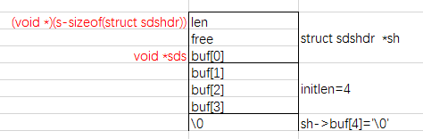

Redis 底层使用 SDS (Simple Dynamic Strings) 作为字符串类型的存储方式之一，其结构非常简单，直接看源码即可了解个大概：
1 | typedef char *sds; |
其中，结构体 sdshdr 中的 len 用来存储字符串的实际长度，free 用来存储预留空间的长度，buf 用来存储字符串内容。
与一般动态字符串直接使用结构体表示字符串的实现方式不同，sds 仍使用 char* 表示字符串，只是其指向的位置略微特殊而已。通过创建 sds 的函数，可以看出这种特殊性：
1 | sds sdsnewlen(const void *init, size_t initlen) { |
通过源代码了解到，实际存储字符串相关信息的仍然是 struct （sdshdr），sds 其实是返回指向其 buf 数组的首个元素的指针。借用 redis 作者的描述：
+--------+-------------------------------+-----------+
| Header | Binary safe C alike string... | Null term |
+--------+-------------------------------+-----------+
|
`-> Pointer returned to the user.
另外值得注意的是，通过：
1 | sh->len = initlen; |
可以看出，redis 在首次创建字符串时并不会额外分配 free 空间，而是按字符串实际的大小申请内存空间来创建，这和 Java 中 StringBuffer 等预先分配一定容量(通常16char)的策略是不同的。
sds 是二进制安全的，字符串中间可以包含 \0 。获取 sds 的长度时通常不能直接使用 strlen 而是使用 sdslen 读取其 len 值：
1 | static inline size_t sdslen(const sds s) { |
唐老师给我画了一张图，可以帮助理解：

最后一个值得关注的问题是，sds 是如何扩容的？这一过程在 sdsMakeRoomFor 函数中实现：
1 | sds sdsMakeRoomFor(sds s, size_t addlen) { |
可以看到，当扩展后的长度比 SDS_MAX_PREALLOC 小时，预留一倍的容量；否则增加 SDS_MAX_PREALLOC 的容量。当前版本中：
1 | #define SDS_MAX_PREALLOC (1024*1024) |
理解了这些便很容易知道 redis APPEND 命令的实现细节：
1 | $ SET foo bar |
当然，这种预先分配容量的方式，虽然能减少内存分配的次数，提高 APPEND 操作的性能，但会造成一定的内存占用，而且此部分内存不会主动释放。
(使用的源码基于 redis 3.0.5)